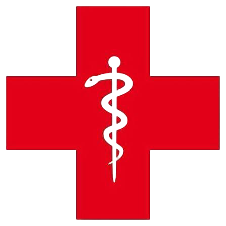
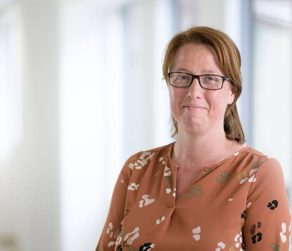

Orthopedie en traumatologie, met aandacht voor elke stap.
Dr. Birgitt Allemon behandelt in haar praktijk in Lennik aandoeningen van gewrichten en botten bij zowel volwassenen als kinderen. U kunt er terecht voor raadplegingen en gipsbehandelingen.


Dr. Birgitt Allemon
Dr. Allemon runt haar privépraktijk in Lennik en is daarnaast werkzaam in het Sint-Elisabeth Ziekenhuis te Zottegem. Ze werkt uitsluitend op afspraak, zodat elke patiënt voldoende tijd en aandacht krijgt.
Voor wie na een consultatie verder onderzoek of een ingreep in het ziekenhuis nodig heeft, is het Sint-Elisabeth Ziekenhuis dankzij zijn centrale ligging vlot bereikbaar met wagen en openbaar vervoer. Meer over het ziekenhuis zelf vindt u op sezz.be.
Praktische info
Antwoorden op vragen die vaak terugkomen. Klik op een vraag voor meer uitleg.
Een gips: wat nu?
Houd het gips droog en belast het aangedane lidmaat zo weinig mogelijk. Leg de arm of het been waar mogelijk hoger dan het hart om zwelling te beperken.
Neem contact op met het secretariaat bij toenemende pijn, een blauwe of witte verkleuring van vingers of tenen, of een doof gevoel dat niet overgaat.
Na mijn ingreep
Volg de instructies die u na de operatie meekrijgt over rust, wondverzorging en het gebruik van krukken of een brace.
Bel de praktijk bij koorts, sterk toenemende zwelling of roodheid rond de wonde.
Voor uw kijkoperatie
Kijkoperaties aan knie of heup gebeuren in het Sint-Elisabeth Ziekenhuis te Zottegem. U ontvangt vooraf instructies over nuchter zijn en de documenten die u moet meebrengen.
Voorzie iemand die u na de ingreep naar huis kan brengen.
Raadpleging met uw kind
Breng eerdere onderzoeken of foto's mee indien u die heeft. Comfortabele kledij maakt het onderzoek voor uw kind gemakkelijker.
Secretariaat
Dr. Allemon werkt enkel op afspraak. Voor vragen kan u het secretariaat telefonisch bereiken.
Over uw afspraak
- Kan u een afspraak niet nakomen? Verwittig minstens 2 uur op voorhand, anders wordt de consultatie aangerekend.
- Kom op tijd, zodat het afgesproken tijdstip zo goed mogelijk gerespecteerd kan worden.